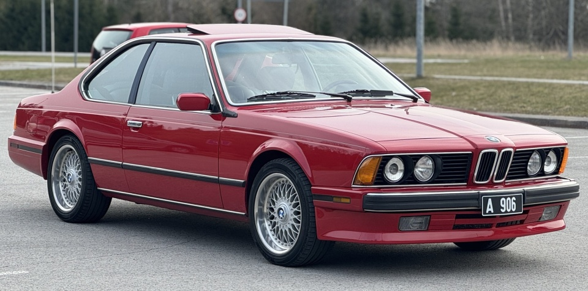
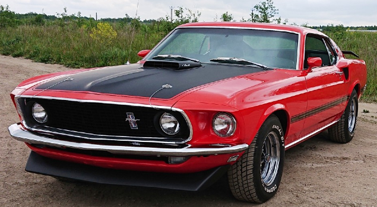
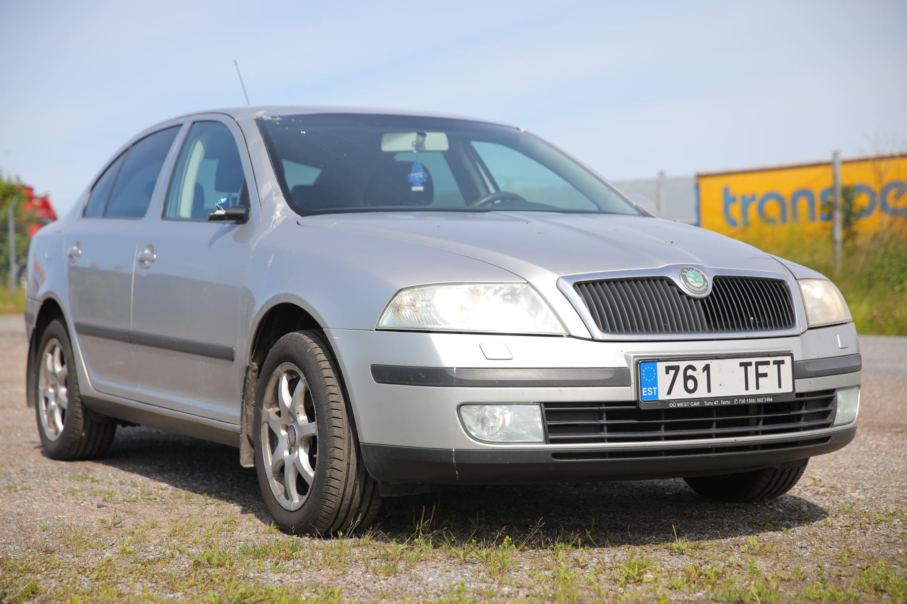
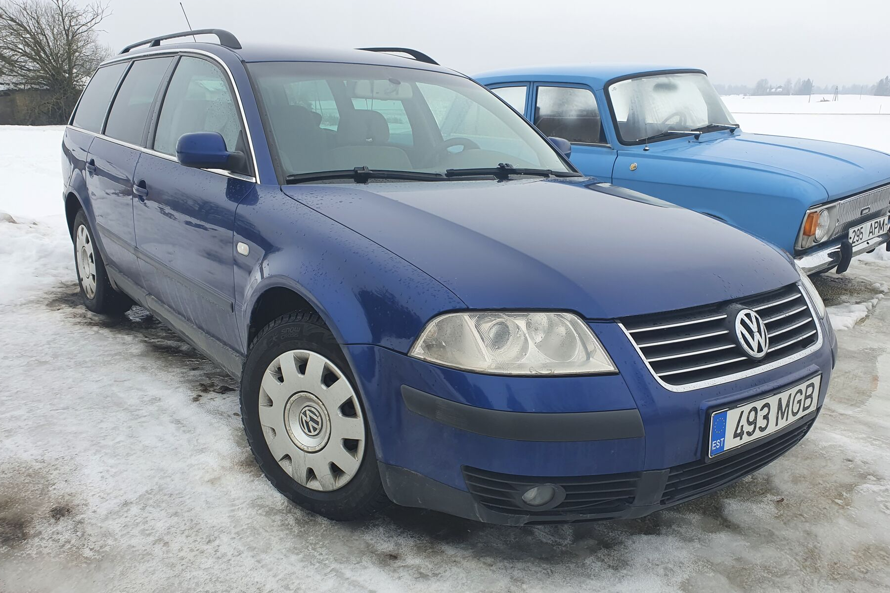
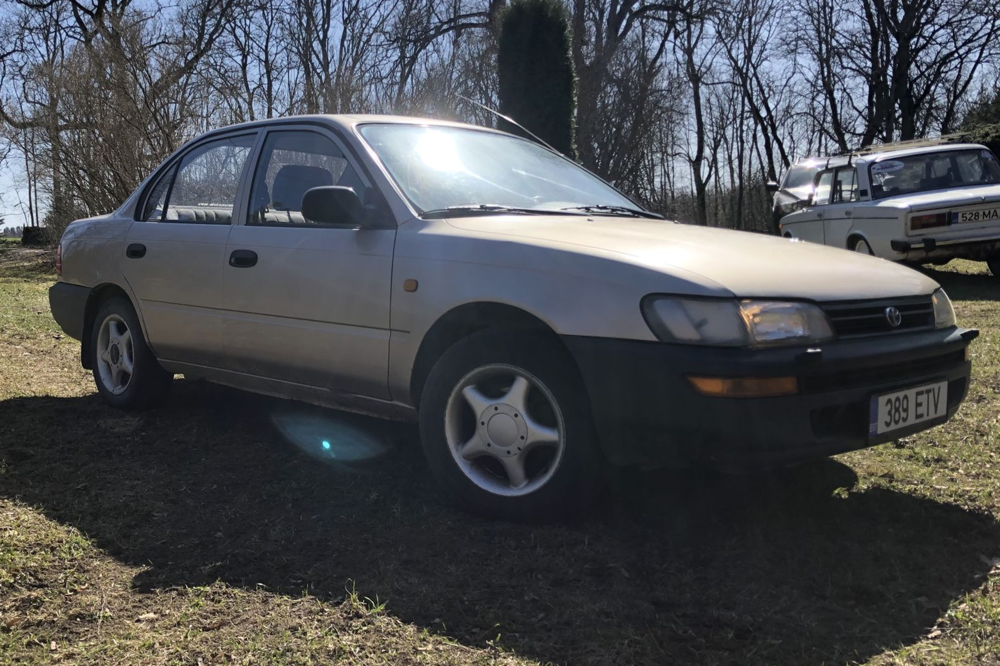

Minu arvates on Eesti autokultuur õudne. Iga inimene tahab osta endale kas BMW või Mercedes-Benzi ja keegi ei taha enam midagi huvitavat või ägedat valida. Mina ise oman praegu 1997. aasta Toyota Carina E-d ja olen sellega väga rahul. Ma ei saa aru inimestest, kes ostavad endale BMW vaid selleks, et "ägedad" välja näha. Kuna see auto on peaaegu kõigil, ei ole sa selle ostmisega kuidagi eriline. Paljud muretsevad endale ka uue ja suure maasturi, mis ei ole minu meelest samuti hea idee. Suured autod on kohmakad ning ohtlikud nii kaasliiklejatele kui ka neile, kes nendega ise sõidavad. Uuemad elektriautod on loodusele tegelikult koormavamad kui vanad autod. Elektriautod kasutavad akusid, mille tootmine on väga kallis ja nõuab tohutult erinevaid materjale. Pildil on Eestis registreeritud BMW 635CSi. Sellised autod on minu jaoks tõeliselt lahedad ja huvitavad. Kui võrrelda seda mõne tänapäeva autoga, on kohe näha, kumb on stiilsem. Loomulikult on sellised sõidukid väga kallid – Eestis on praegu üks 635CSi müügil 26 900 euro eest. See on päris suur summa, aga kui sul on see raha olemas, siis tasuks uue maasturi asemel igal juhul just selline klassik osta.

Paljud tänapäeva noored ostavad vanu autosid ja selleks on mitu põhjust. Kõige tavalisem neist on hind: vanad autod on soodsad ja noor inimene ei taha auto eest liiga palju maksta. See on täiesti mõistetav, sest uuemad masinad on kallid, eriti just noorte jaoks. Teine põhjus peitub isiklikus maitses. Paljud ostavad endale auto, mis neile tõeliselt meeldib või mis on nende jaoks huvitav. Mõned arvavad, et tänapäeva autod on igavad ja koledad – mina olen üks nendest. Ostsingi oma auto just seetõttu, et see tundus põnev. Mul oli valikus mitu autosid, kuid teised variandid olid minu Toyota kõrval päris igavad. Kolmas põhjus on see, et vanemad autod on ehituselt lihtsamad ja kui midagi katki läheb, saab selle ise korda teha. Olen ka ise väga huvitatud oma auto parandamisest – alles paar nädalat tagasi tegin sõidukile tavapärase hoolduse. Ise remontimine on väga tänuväärne, sest see õpetab tehnilist taiplikkust ja käelist tegevust. Paljud viivad oma auto lihtsalt mehaaniku juurde, mis ei ole vale ega halb, kuid alati on hea ka ise kätt proovida.


Pildil on 2006. aasta Skoda Octavia liftback stiilis

Pildil on 2003. aasta Volkswagen Passat B5 variant

Pildil on 1992. aasta Toyota Corolla sedaan stiilis